*The plane has no height, so scaling in the Y direction has no effect
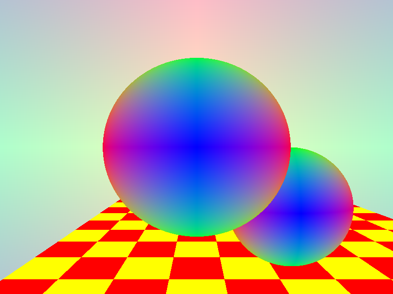
The shading function used for the spheres in this scene uses the normal vectors as scalars for the r,g,b components of each pixel.
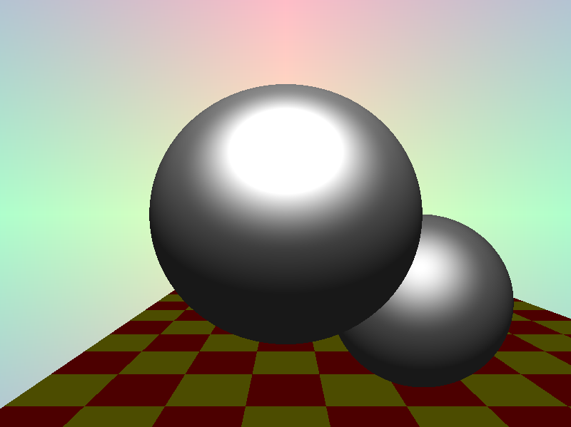
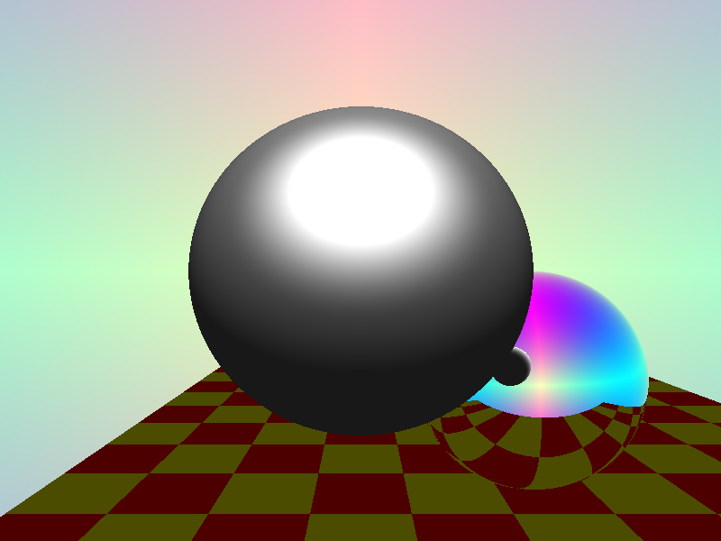
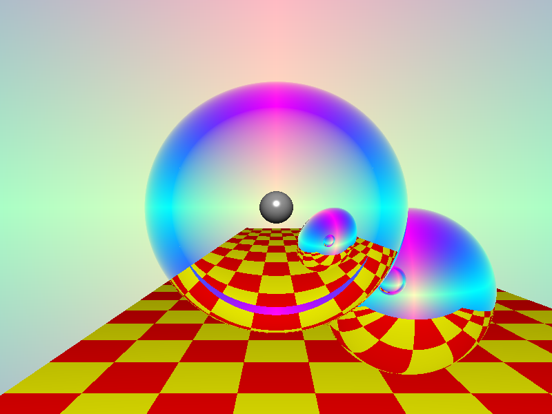
Foreground sphere pictured with an index of refraction of 0.8, with an additional background sphere added to make sure rays refracted in the correct directions.
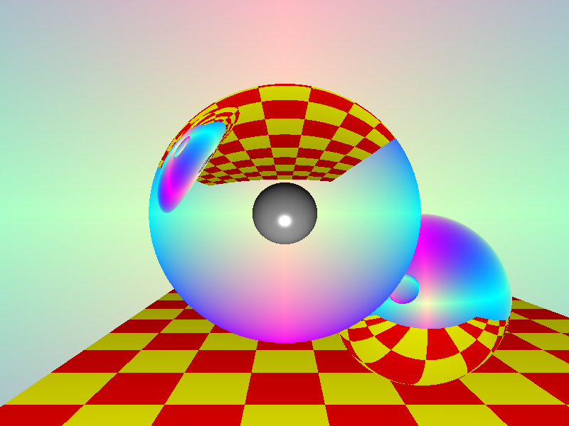
Foreground sphere pictured with an index of refraction of 1.5, inverting the scene behind it.
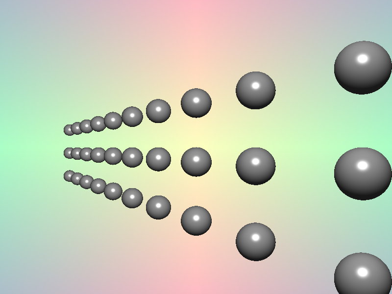
This is the test scene used for assessing depth of field effects.
This was the first attempt at implementing the "bokeh" approach to depth of field, shown in the midterm presentation.
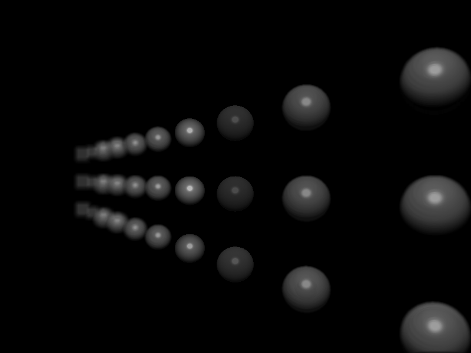
This was the most convincing image achieved with the final implementation of the "bokeh" approach.
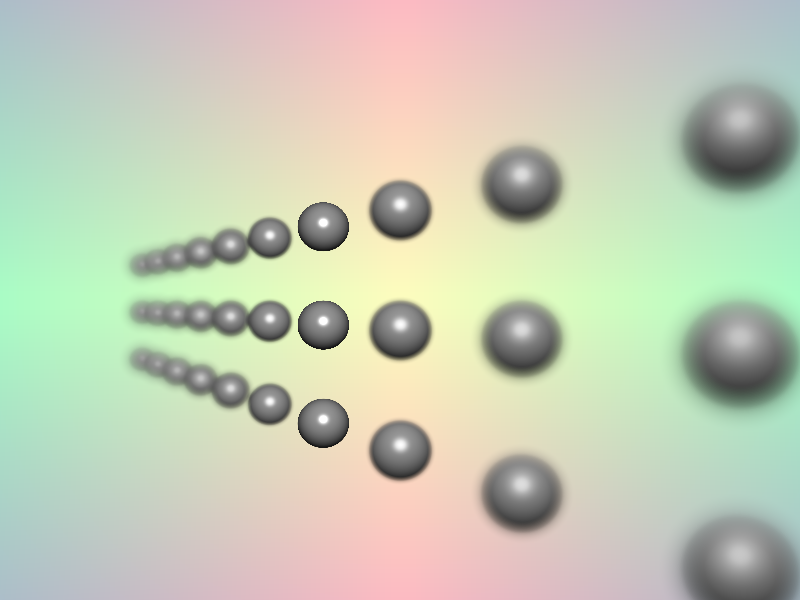
Here the scene is rendered using the physically-based approach, simulating an aperture with a 0.2 diameter and focal length of 11 in the space of the scene.
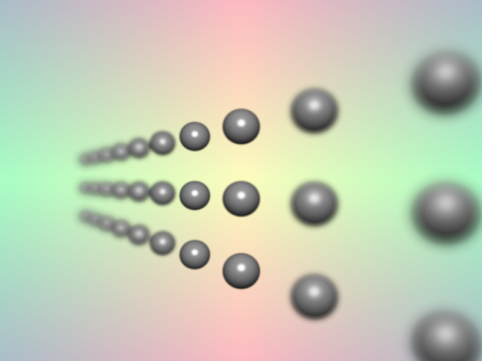
The parameters here are the same as the above scene, except that the focal length is change slightly to mitigate aliasing around the edges of the spheres in the depth of field.
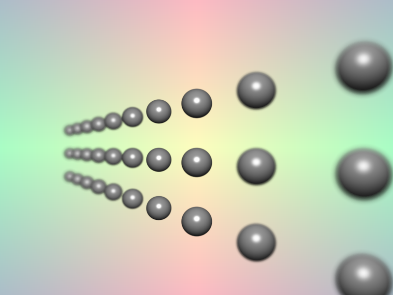
Here, the same parameters are used with an aperture of 0.1, producing a longer depth of field.
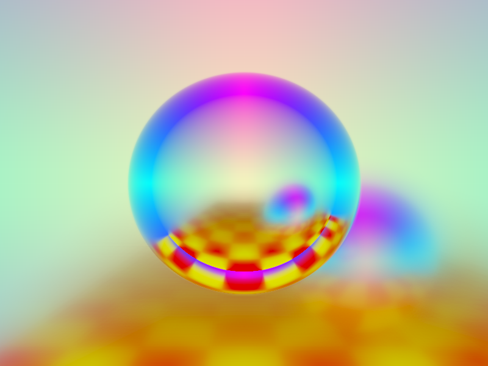
Here, the default scene is rendered with an aperture of 0.4, and a focal length of 3 so that only the foreground sphere falls within the depth of field.